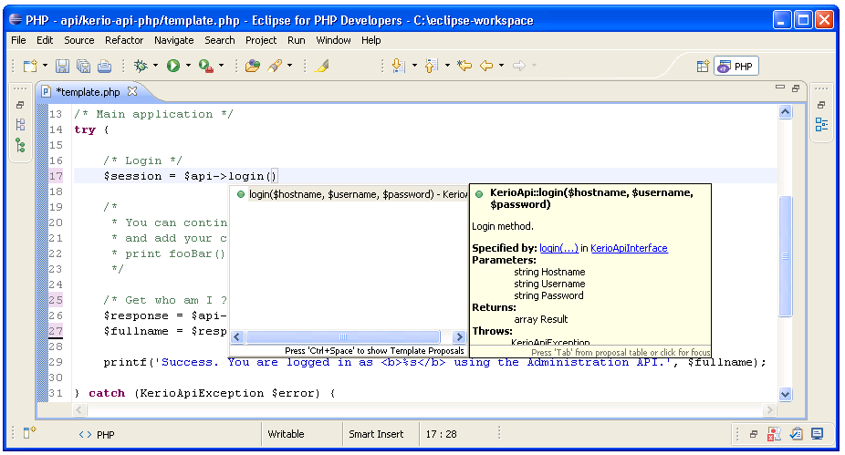

Best Practices
This document provides a collection of some useful tips.
Out of Scope
JSON-RPC protocol is not a subject of the kerio-api-php. The local copy of JSON-RPC 2.0 Specification can be found here. User is supposed to know the Administration API for Kerio Connect as described in the official product documentation. Also any other Kerio API, e.g. WebMail is not subject of the kerio-api-php library.
Eclipse IDE
We recommend you Eclipse for PHP Developers which is free for use and cross-platform editor. Writing code with Eclipse is easier and more productive. It can autocomplete methods, check code syntax and much more. Of course, you can write code in any editor you are familiar with.
Debugging
Debug messages are disabled by default. To enable displaying them, just call setDebug(true). In your code you can enable or disable them as many times as you wish.
Displaying Own Debug Message
To display own debug message, call debug('This message will be displayed if debug is true').
$api->setDebug(TRUE);
$api->debug('1: This message will be displayed if debug is true');
$api->setDebug(FALSE);
$api->debug('2: This message will be displayed if debug is true.');
Errors
In general, all methods on which future code execution could depend should be caught by an exception. You should use try catch block.
Catching Errors
try {
$api->sendRequest();
print 'Success';
}
catch (KerioApiException $error) {
print 'Some error occurred: ';
print $error->getMessage();
}
Logging
Sometimes it is useful to log some messages also into a text file, usually a log file. For this purpose there is prepared a simple class Logger which is ready for quick and easy use. To start using it, include the Logger.php.
A message is then written in the following format: hh:mm:ss (script name) your message
Logging Example
require_once(dirname(__FILE__) . '/class/Logger.php');
$log = new Logger();
$log->open('/tmp/mylog.log');
$log->write('Hello World.');
Sample Username Access Control
First you need to create an .htaccess authentication file. This file is the key to providing who has access to the files in the directory. Second file (.htpasswd) contains the usernames and passwords of those individuals who have authorized access to the directory and subdirectories.
Type htpasswd -c .htpasswd username to create the .htpasswd file and add username to list of authorized users. The program will initially prompt you for a password and then ask you to verify it.
AuthName "Secured Area"
AuthUserFile /path/to/.htpasswd
AuthType basic
Require valid-user
Optionally you can use any online tool, e.g. htpasswd generator.